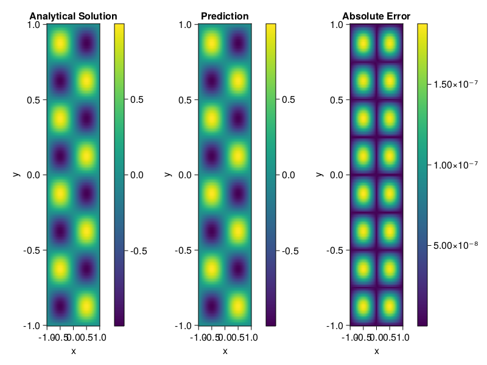

Helmholtz equation
Let us consider the Helmholtz equation in two space dimensions
\[\begin{aligned} &\Delta u(x, y)+k^{2} u(x, y)=q(x, y), \quad(x, y) \in \Omega:=(-1,1)^2 \\ &u(x, y)=0, \quad(x, y) \in \partial \Omega \end{aligned}\]
where
\[q(x, y)=-\left(a_{1} \pi\right)^{2} \sin \left(a_{1} \pi x\right) \sin \left(a_{2} \pi y\right)-\left(a_{2} \pi\right)^{2} \sin \left(a_{1} \pi x\right) \sin \left(a_{2} \pi y\right)+k^{2} \sin \left(a_{1} \pi x\right) \sin \left(a_{2} \pi y\right).\]
The excat solution is $u(x,y)=\sin{a_1\pi x}\sin{a_2\pi y}$. We chose $k=1, a_1 = 1$ and $a_2 = 4$.
using ModelingToolkit, IntervalSets, Sophon, Lux
using Optimization, OptimizationOptimJL
@parameters x,y
@variables u(..)
Dxx = Differential(x)^2
Dyy = Differential(y)^2
a1 = 1
a2 = 4
k = 1
q(x,y) = -(a1*π)^2 * sin(a1*π*x) * sin(a2*π*y) - (a2*π)^2 * sin(a1*π*x) * sin(a2*π*y) + k^2 * sin(a1*π*x) * sin(a2*π*y)
eq = Dxx(u(x,y)) + Dyy(u(x,y)) + k^2 * u(x,y) ~ q(x,y)
domains = [x ∈ Interval(-1,1), y ∈ Interval(-1,1)]
bcs = [u(-1,y) ~ 0, u(1,y) ~ 0, u(x, -1) ~ 0, u(x, 1) ~ 0]
@named helmholtz = PDESystem(eq, bcs, domains, [x,y], [u(x,y)])\[ \begin{align} \frac{\mathrm{d}^{2}}{\mathrm{d}x^{2}} u\left( x, y \right) + \frac{\mathrm{d}^{2}}{\mathrm{d}y^{2}} u\left( x, y \right) + u\left( x, y \right) =& - 166.7832748185191 \sin\left( 3.141592653589793 x \right) \sin\left( 12.566370614359172 y \right) \end{align} \]
Note that the boundary conditions are compatible with periocity, which allows us to apply BACON.
chain = BACON(2, 1, 5, 2; hidden_dims = 32, num_layers=5)
pinn = PINN(chain) # call `gpu` on it if you want to use gpu
sampler = QuasiRandomSampler(300, 100)
strategy = NonAdaptiveTraining()
prob = Sophon.discretize(helmholtz, pinn, sampler, strategy)
@time res = Optimization.solve(prob, BFGS(); maxiters=1000)u: ComponentVector{Float64}(filters = (filter_1 = (bias = [-0.015427872033499447; -0.45423615126687306; … ; -0.3509586073211494; 1.0125148486497662;;]), filter_2 = (bias = [0.3196158612199177; -0.2404179036745846; … ; -0.4535724894118326; 0.3294612774374582;;]), filter_3 = (bias = [-0.18861021371914974; 0.8908032611230939; … ; -0.6091605884517357; 0.9202324743274107;;]), filter_4 = (bias = [0.8480131411512536; 0.4152639898383493; … ; 0.24319515454647533; -0.9101379581305639;;]), filter_5 = (bias = [-0.03910085916073612; -0.779811845083557; … ; -0.061794814932168485; -0.4264877555655987;;])), linear_layers = (layer_1 = (weight = [0.334780413424335 -0.16254257006807687 … -0.3739954483712707 -0.0722384068410745; -0.3578021204876292 -0.250671967675742 … 0.05775478441552022 -0.14806745759670714; … ; 0.14063240477344485 -0.036154348804181356 … -0.10285223198672248 -0.08069147241225891; 0.3021894281204566 -0.09187746650419763 … 0.32704991808488226 -0.3320136430552309], bias = [0.000871973510591328; 0.010140779326781328; … ; -0.021311044051532543; -0.00986222641305022;;]), layer_2 = (weight = [0.2023040369045159 -0.09153291491941173 … -0.24834977775602285 0.40383476318833317; 0.12395708732212125 -0.05272235161457916 … 0.3552325672067745 0.18802772313510238; … ; -0.20505480551937363 -0.19281141822762815 … -0.3519705550833071 -0.4362166974887545; -0.16531449662300998 0.2263085069293059 … -0.14769734439052418 0.2795448905940807], bias = [-0.01823671781527168; 0.02524096539755158; … ; 0.017115673071309772; -0.01170013167147703;;]), layer_3 = (weight = [-0.08853445368196147 -0.11784110688342045 … -0.08758210290084487 -0.2745634361825696; -0.20686922238008423 0.22543521166149252 … -0.08992830236831977 0.23604573770057116; … ; -0.1338815168210659 0.17292961557025915 … 0.4915982209309324 -0.08289007173399872; -0.29893022469122404 0.16413487003745847 … -0.27230920771357703 0.2863737503822496], bias = [0.008141670602376829; 0.0006375069459183531; … ; 0.0009320361365841893; 0.007772194692768935;;]), layer_4 = (weight = [0.08998564959488853 -0.39111619273476445 … 0.16196107111772423 -0.3803247908046077; 0.2214504363021844 0.06454906828666246 … -0.27555490653172887 0.4808514751797168; … ; 0.40517650578864833 -0.010129558087758395 … -0.2942772440686219 0.45893120052389974; -0.25058665224601473 0.14288741205724345 … 0.43083836254595287 0.16242881214108454], bias = [0.012305452880684006; 0.019355671172717828; … ; 0.029609562719906824; 0.020065164629427125;;])), output_layer = (weight = [-0.22476750401604337 -0.1539656768037549 … -0.868892152144883 0.34358557755634656], bias = [-0.059625472562010166;;]))Let's plot the result.
phi = pinn.phi
xs, ys= [infimum(d.domain):0.01:supremum(d.domain) for d in domains]
u_analytic(x,y) = sinpi(a1*x)*sinpi(a2*y)
u_real = [u_analytic(x,y) for x in xs, y in ys]
phi_cpu = cpu(phi) # in case you are using GPU
ps_cpu = cpu(res.u)
u_pred = [sum(phi_cpu(([x,y]), ps_cpu)) for x in xs, y in ys]
using CairoMakie
axis = (xlabel="x", ylabel="y", title="Analytical Solution")
fig, ax1, hm1 = heatmap(xs, ys, u_real, axis=axis)
Colorbar(fig[:, end+1], hm1)
ax2, hm2= heatmap(fig[1, end+1], xs, ys, u_pred, axis= merge(axis, (;title = "Prediction")))
Colorbar(fig[:, end+1], hm2)
ax3, hm3 = heatmap(fig[1, end+1], xs, ys, abs.(u_pred-u_real), axis= merge(axis, (;title = "Absolute Error")))
Colorbar(fig[:, end+1], hm3)
fig